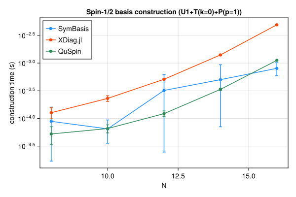
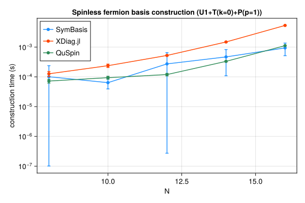
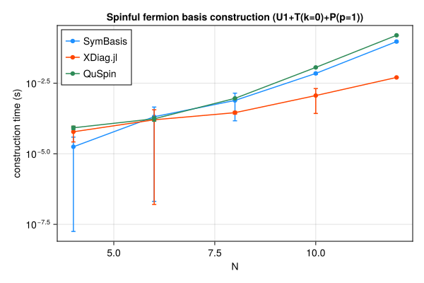
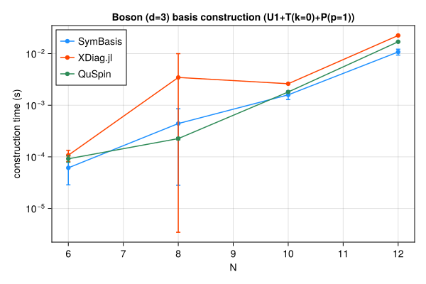

Symmetry-resolved basis construction and representative-state lookup speed, compared against XDiag.jl and QuSpin. SymBasis is benchmarked against its own dev checkout; XDiag.jl and QuSpin are whatever their latest released versions were at the time this page was generated. Regenerated automatically on every SymBasis release.
Threads are left at each library's own defaults (JULIA_NUM_THREADS=auto, OMP_NUM_THREADS unset) rather than pinned to 1 – these numbers reflect out-of-the-box performance, not a strictly single-threaded comparison.
Sweep: BENCH_SWEEP=quick
plot_construction("spin", "Spin-1/2")

| N | config | dim | SymBasis | XDiag | QuSpin | XDiag/SymBasis | QuSpin/SymBasis |
|---|
| 8 | U1 | 70 | 7.088e-06 ± 8.4e-06 s | 4.065e-06 ± 6.3e-06 s | 3.679e-05 ± 1.2e-05 s | 0.57x | 5.19x |
| 8 | U1+T(k=0) | 10 | 1.216e-05 ± 1.2e-05 s | 0.000523 ± 0.0015 s | 4.572e-05 ± 1.1e-05 s | 43.00x | 3.76x |
| 8 | U1+T(k=0)+P(p=1) | 8 | 8.859e-05 ± 7.2e-05 s | 0.000127 ± 2.9e-05 s | 5.244e-05 ± 1.8e-05 s | 1.43x | 0.59x |
| 10 | U1 | 252 | 1.051e-05 ± 1e-05 s | 4.32e-06 ± 5.8e-06 s | 4.191e-05 ± 1.8e-05 s | 0.41x | 3.99x |
| 10 | U1+T(k=0) | 26 | 6.645e-05 ± 7.5e-05 s | 0.000172 ± 0.00025 s | 5.572e-05 ± 1e-05 s | 2.59x | 0.84x |
| 10 | U1+T(k=0)+P(p=1) | 16 | 6.475e-05 ± 2.9e-05 s | 0.0002301 ± 2.7e-05 s | 6.572e-05 ± 1.1e-05 s | 3.55x | 1.01x |
| 12 | U1 | 924 | 2.168e-05 ± 9.7e-06 s | 4.579e-06 ± 6e-06 s | 4.42e-05 ± 7.3e-06 s | 0.21x | 2.04x |
| 12 | U1+T(k=0) | 80 | 8.151e-05 ± 3.1e-05 s | 0.0002806 ± 3e-05 s | 9.488e-05 ± 2.1e-05 s | 3.44x | 1.16x |
| 12 | U1+T(k=0)+P(p=1) | 50 | 0.0003209 ± 0.0003 s | 0.0005103 ± 1.6e-05 s | 0.0001222 ± 1.5e-05 s | 1.59x | 0.38x |
| 14 | U1 | 3432 | 0.0001101 ± 2.1e-05 s | 6.015e-06 ± 7.1e-06 s | 6.458e-05 ± 8.6e-06 s | 0.05x | 0.59x |
| 14 | U1+T(k=0) | 246 | 0.0002567 ± 0.00022 s | 0.0009781 ± 2.8e-05 s | 0.0002274 ± 1.7e-05 s | 3.81x | 0.89x |
| 14 | U1+T(k=0)+P(p=1) | 133 | 0.0005019 ± 0.00043 s | 0.001403 ± 3.8e-05 s | 0.0003351 ± 1.4e-05 s | 2.80x | 0.67x |
| 16 | U1 | 12870 | 0.0003724 ± 6.4e-05 s | 6.769e-06 ± 7.8e-06 s | 0.0001514 ± 1.2e-05 s | 0.02x | 0.41x |
| 16 | U1+T(k=0) | 810 | 0.0004863 ± 0.00015 s | 0.003919 ± 5.3e-05 s | 0.0007362 ± 2.1e-05 s | 8.06x | 1.51x |
| 16 | U1+T(k=0)+P(p=1) | 440 | 0.0008039 ± 0.00021 s | 0.004915 ± 4.8e-05 s | 0.001121 ± 1e-05 s | 6.11x | 1.39x |
| N | config | nsamples | SymBasis | XDiag | QuSpin |
|---|
| 16 | U1+T(k=0)+P(p=1) | 10000 | 3.142e-07 ± 3e-09 s | N/A (no decoupled API) | 1.788e-07 ± 1.4e-09 s |
plot_construction("fermion", "Spinless fermion")

| N | config | dim | SymBasis | XDiag | QuSpin | XDiag/SymBasis | QuSpin/SymBasis |
|---|
| 8 | U1 | 70 | 6.985e-06 ± 7.8e-06 s | 4.204e-06 ± 6.2e-06 s | 5.128e-05 ± 1.3e-05 s | 0.60x | 7.34x |
| 8 | U1+T(k=0) | 9 | 1.308e-05 ± 1.4e-05 s | 5.323e-05 ± 2.5e-05 s | 6.431e-05 ± 1.1e-05 s | 4.07x | 4.92x |
| 8 | U1+T(k=0)+P(p=1) | 6 | 0.0001011 ± 0.00014 s | 0.0001271 ± 2.5e-05 s | 7.246e-05 ± 1.1e-05 s | 1.26x | 0.72x |
| 10 | U1 | 252 | 1.052e-05 ± 1e-05 s | 4.142e-06 ± 5.8e-06 s | 5.188e-05 ± 1.2e-05 s | 0.39x | 4.93x |
| 10 | U1+T(k=0) | 26 | 5.996e-05 ± 6.6e-05 s | 0.0001084 ± 2.3e-05 s | 7.806e-05 ± 1.1e-05 s | 1.81x | 1.30x |
| 10 | U1+T(k=0)+P(p=1) | 16 | 6.399e-05 ± 2.5e-05 s | 0.0002379 ± 3.1e-05 s | 9.416e-05 ± 1.1e-05 s | 3.72x | 1.47x |
| 12 | U1 | 924 | 2.152e-05 ± 9.6e-06 s | 4.002e-06 ± 5.6e-06 s | 6.32e-05 ± 1.3e-05 s | 0.19x | 2.94x |
| 12 | U1+T(k=0) | 76 | 0.00016 ± 0.00017 s | 0.0003076 ± 2.4e-05 s | 0.0001157 ± 2.8e-05 s | 1.92x | 0.72x |
| 12 | U1+T(k=0)+P(p=1) | 33 | 0.0002732 ± 0.00038 s | 0.0005251 ± 2.1e-05 s | 0.0001197 ± 1.2e-05 s | 1.92x | 0.44x |
| 14 | U1 | 3432 | 0.0001982 ± 0.00024 s | 5.256e-06 ± 6.3e-06 s | 6.64e-05 ± 1.5e-05 s | 0.03x | 0.34x |
| 14 | U1+T(k=0) | 246 | 0.0002228 ± 0.0001 s | 0.001131 ± 2.8e-05 s | 0.0002321 ± 1.7e-05 s | 5.08x | 1.04x |
| 14 | U1+T(k=0)+P(p=1) | 113 | 0.000469 ± 0.00036 s | 0.00149 ± 5.7e-05 s | 0.0003323 ± 1.6e-05 s | 3.18x | 0.71x |
| 16 | U1 | 12870 | 0.00101 ± 0.00072 s | 6.659e-06 ± 7.4e-06 s | 0.0001511 ± 1.3e-05 s | 0.01x | 0.15x |
| 16 | U1+T(k=0) | 809 | 0.0007081 ± 0.00058 s | 0.004569 ± 2.1e-05 s | 0.0007308 ± 1.2e-05 s | 6.45x | 1.03x |
| 16 | U1+T(k=0)+P(p=1) | 422 | 0.0009412 ± 0.00043 s | 0.005355 ± 5.4e-05 s | 0.001121 ± 1.3e-05 s | 5.69x | 1.19x |
| N | config | nsamples | SymBasis | XDiag | QuSpin |
|---|
| 16 | U1+T(k=0)+P(p=1) | 10000 | 3.692e-07 ± 7.3e-10 s | N/A (no decoupled API) | 1.864e-06 ± 4.7e-09 s |
plot_construction("spinful_fermion", "Spinful fermion")

| N | config | dim | SymBasis | XDiag | QuSpin | XDiag/SymBasis | QuSpin/SymBasis |
|---|
| 4 | U1 | 36 | 7.926e-06 ± 8.2e-06 s | 5.168e-06 ± 7.9e-06 s | 6.537e-05 ± 2.5e-05 s | 0.65x | 8.25x |
| 4 | U1+T(k=0) | 10 | 1.145e-05 ± 1.1e-05 s | 3.862e-05 ± 3.1e-05 s | 7.204e-05 ± 1.2e-05 s | 3.37x | 6.29x |
| 4 | U1+T(k=0)+P(p=1) | 6 | 1.771e-05 ± 2.1e-05 s | 6.02e-05 ± 3.4e-05 s | 8.35e-05 ± 1.2e-05 s | 3.40x | 4.71x |
| 6 | U1 | 400 | 2.535e-05 ± 1.4e-05 s | 4.662e-06 ± 7.9e-06 s | 7.212e-05 ± 1.1e-05 s | 0.18x | 2.84x |
| 6 | U1+T(k=0) | 68 | 0.000257 ± 0.00051 s | 5.196e-05 ± 2.7e-05 s | 0.0001271 ± 1.2e-05 s | 0.20x | 0.49x |
| 6 | U1+T(k=0)+P(p=1) | 38 | 0.0002057 ± 0.00025 s | 0.0001602 ± 0.0002 s | 0.0001737 ± 3.2e-05 s | 0.78x | 0.84x |
| 8 | U1 | 4900 | 0.000349 ± 0.00024 s | 5.831e-06 ± 9.1e-06 s | 0.0001257 ± 1.2e-05 s | 0.02x | 0.36x |
| 8 | U1+T(k=0) | 618 | 0.0004785 ± 0.00017 s | 0.0001223 ± 3.2e-05 s | 0.0005363 ± 1.9e-05 s | 0.26x | 1.12x |
| 8 | U1+T(k=0)+P(p=1) | 318 | 0.0007766 ± 0.00063 s | 0.0002862 ± 3.1e-05 s | 0.0009213 ± 1.3e-05 s | 0.37x | 1.19x |
| 10 | U1 | 63504 | 0.002854 ± 0.00063 s | 5.184e-06 ± 8e-06 s | 0.001067 ± 1.9e-05 s | 0.00x | 0.37x |
| 10 | U1+T(k=0) | 6352 | 0.004885 ± 0.00097 s | 0.0003935 ± 3e-05 s | 0.006434 ± 1.5e-05 s | 0.08x | 1.32x |
| 10 | U1+T(k=0)+P(p=1) | 3212 | 0.007032 ± 0.00053 s | 0.001157 ± 0.00089 s | 0.01149 ± 0.00012 s | 0.16x | 1.63x |
| 12 | U1 | 853776 | 0.02237 ± 0.007 s | 6.082e-06 ± 8.2e-06 s | 0.01543 ± 7.8e-05 s | 0.00x | 0.69x |
| 12 | U1+T(k=0) | 71188 | 0.05714 ± 0.0075 s | 0.00203 ± 5.5e-05 s | 0.08976 ± 0.00014 s | 0.04x | 1.57x |
| 12 | U1+T(k=0)+P(p=1) | 35694 | 0.09464 ± 0.0053 s | 0.005076 ± 4.5e-05 s | 0.1577 ± 0.0003 s | 0.05x | 1.67x |
| N | config | nsamples | SymBasis | XDiag | QuSpin |
|---|
| 12 | U1+T(k=0)+P(p=1) | 10000 | 1.404e-06 ± 2.5e-09 s | N/A (no decoupled API) | 2.216e-06 ± 9.7e-09 s |
plot_construction("boson", "Boson (d=3)")

| N | config | dim | SymBasis | XDiag | QuSpin | XDiag/SymBasis | QuSpin/SymBasis |
|---|
| 6 | U1 | 141 | 1.079e-05 ± 9.6e-06 s | 4.503e-06 ± 5.7e-06 s | 5.57e-05 ± 1.2e-05 s | 0.42x | 5.16x |
| 6 | U1+T(k=0) | 26 | 2.141e-05 ± 1.3e-05 s | 5.975e-05 ± 2.6e-05 s | 7.608e-05 ± 1.1e-05 s | 2.79x | 3.55x |
| 6 | U1+T(k=0)+P(p=1) | 18 | 6.124e-05 ± 3.3e-05 s | 0.0001075 ± 2.6e-05 s | 9.17e-05 ± 1.3e-05 s | 1.76x | 1.50x |
| 8 | U1 | 1107 | 0.0001796 ± 0.00012 s | 6.805e-06 ± 7.3e-06 s | 9.805e-05 ± 1.1e-05 s | 0.04x | 0.55x |
| 8 | U1+T(k=0) | 142 | 0.0001608 ± 6e-05 s | 0.0002547 ± 2.4e-05 s | 0.0002303 ± 1.1e-05 s | 1.58x | 1.43x |
| 8 | U1+T(k=0)+P(p=1) | 84 | 0.0004418 ± 0.00041 s | 0.003452 ± 0.0065 s | 0.0002256 ± 1.2e-05 s | 7.81x | 0.51x |
| 10 | U1 | 8953 | 0.0004256 ± 4.1e-05 s | 1.108e-05 ± 8.1e-06 s | 0.0002955 ± 1.6e-05 s | 0.03x | 0.69x |
| 10 | U1+T(k=0) | 902 | 0.0007958 ± 4.6e-05 s | 0.002096 ± 0.0002 s | 0.001505 ± 1.4e-05 s | 2.63x | 1.89x |
| 10 | U1+T(k=0)+P(p=1) | 486 | 0.001589 ± 0.0003 s | 0.00261 ± 2.5e-05 s | 0.001807 ± 1.6e-05 s | 1.64x | 1.14x |
| 12 | U1 | 73789 | 0.00284 ± 0.00058 s | 3.43e-05 ± 1.3e-05 s | 0.002145 ± 4.5e-05 s | 0.01x | 0.76x |
| 12 | U1+T(k=0) | 6166 | 0.00676 ± 0.00079 s | 0.01888 ± 5.6e-05 s | 0.01413 ± 2.7e-05 s | 2.79x | 2.09x |
| 12 | U1+T(k=0)+P(p=1) | 3179 | 0.01078 ± 0.0014 s | 0.02248 ± 6.5e-05 s | 0.01698 ± 3.7e-05 s | 2.09x | 1.58x |
| N | config | nsamples | SymBasis | XDiag | QuSpin |
|---|
| 12 | U1+T(k=0)+P(p=1) | 10000 | 1.713e-06 ± 3.1e-09 s | N/A (no decoupled API) | 3.172e-07 ± 1.5e-09 s |